Chapter 9. Pragmatism: Experience & Experimental
Overview
Chapter 9 is about pragmatism. Pragmatism is an interesting word because, sometimes, being pragmatic means the opposite of “-ism.” Read what was said about pragmatism: “Consider the practical effects of the objects of your conception. Then, your conception of those effects is the whole of your conception of the object”.230 Peirce, C. S., , Popular Science Monthly, v. 12, 286–302, 1878. In a sense, this resonates with”why by their fruits you shall know them.”231 Matthew 7:20. To analyze a dataset, we shall be aware of a tendency that we often apply concepts before we see the dataset. EDA has provided a practical way to help us see our preconceptions. In this chapter, two more methods are presented, including the kernel regression model that generalizes the idea of linear regression, and the conditional variance regression model that creates a convolution by using regression twice.
Kernel regression model
Rationale and formulation
Simple models, similar to the linear regression model, are like parents who tell white lies. A model is simple, not only in the sense that it looks simple, but also because it builds on assumptions that simplify reality. Among all the simple models, the linear regression model is particularly good at disguising its simplicity—it seems so natural that we often forget that its simplicity is its assumption. Simple in its cosmology, not necessary in its terminology—that is what the phrase simple model means232 In this sense, a model, regardless of how sophisticated its mathematical representation is, is a simple model if its assumptions simplify reality to such an extent that demands our leap of faith..
Figure 164: (Left) A single outlier (a local pattern) could impact the regression model as a whole; (right) a localized regression model (i.e., the curvature adapts to the locality instead of following a prescribed global form such as a straight line)
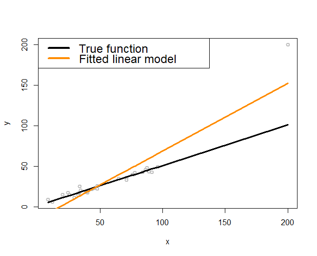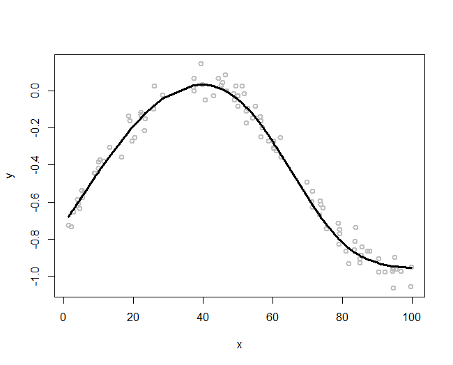“Simple, but not simpler” said Albert Einstein.
One such assumption the linear regression model has made, obviously, is linearity. It would be OK in practice, as Figure 7 in Chapter 2 assures us: it is not perfect but it is a good approximation.
Now let’s look at Figure 164 (left). The true model, represented by the black line, is truly a line. But the fitted model, the orange line, deviates from the black line. In other words, even if the linearity assumption is correct, the consequence is not what we hope for.
The troublemaker appears to be the outlier located on the upper right corner of the figure. As discernible data scientists, we should be aware that the model is general, while the dataset at hand is particular. It is OK to say the outlier is the troublemaker, but note that this outlier is accidental. The real troublemaker is what enables the possibility of outlier to be a troublemaker. The real troublemaker lies deeper.
A common theme of the methods in this book is to establish certainty in a world of uncertainty. The linearity assumption is an assumption, since real data rarely give you a perfect straight line. The way it deals with uncertainty is to use the least squares principle for model estimation. It aims to look for a line that could pierce through all the data points. This makes each data point have a global impact: mentally move any data point in Figure 164 (left) up and down and imagine how the fitted orange line would move up and down accordingly. In other words, as a data point in any location could change the line dramatically, the linear regression model, together with its least squares estimation method, has imposed an even stronger assumption than merely linearity: it assumes that knowledge learned from one location would be universally useful to all other locations. This implicit assumption233 I.e., models that have made this assumption are often termed as global models. could be irrational in some applications, where the data points collected in one location may only tell information about that local area, not easily generalizable to the whole space. Thus, when the global models fail, we need local models234 A local model more relies on the data points in a neighborhood to build up the part of the curve that comes through that particular neighborhood. to fit the data, as shown in Figure 164 (right).
Theory and method
Suppose there are \(N\) data points, denoted as, \(\left(x_{n}, y_{n}\right)\) for \(n=1,2, \dots, N\). To predict on a point \(x^*\), a local model assumes the following structure
\[\begin{equation} \small y^* = \sum_{n=1}^{N} y_n w(x_n, x^*). \tag{98} \end{equation}\]
Here, \(w(x_n,x^*)\) is the weight function that characterizes the similarity between \(x^*\) and the training data points, \(x_n\), for \(n=1,2,\dots,N\). The idea is to predict on a data point based on the data points that are nearby. Methods differ from each other in terms of how they define \(w(x_n,x^*)\).
Roughly speaking, there are two main methods. One is the K-nearest neighbor (KNN) smoother, and another is the kernel smoother.
The KNN smoother. The KNN smoother defines \(w(x_n,x^*)\) as
\[\begin{equation*} \small w\left(x_{n}, x^{*}\right)=\left\{\begin{array}{l}{\frac{1}{k}, \text { if } x_{n} \text { is one of the } k \text { nearest neighbors of } x^{*}}; \\ {0, \text { if } x_{n} \text { is NOT among the } k \text{ nearest neighbors of } x^{*}}.\end{array}\right. \end{equation*}\]
Here, to define the nearest neighbors of a data point, a distance function is needed. Examples include the Euclidean235 E.g., \(d\left(\boldsymbol{x}_n, \boldsymbol{x}_m\right) = \sqrt {\sum _{i=1}^{p} \left( x_{ni}-x_{mi}\right)^2 }\)., Mahalanobis, and Cosine distance functions. What distance function to use depends on the characteristics of the data. Model selection methods such as the cross-validation can be used to select the best distance function for a dataset.
Figure 165: Three KNN smoother models (\(k=1\), \(k=2\), and \(k=6\))
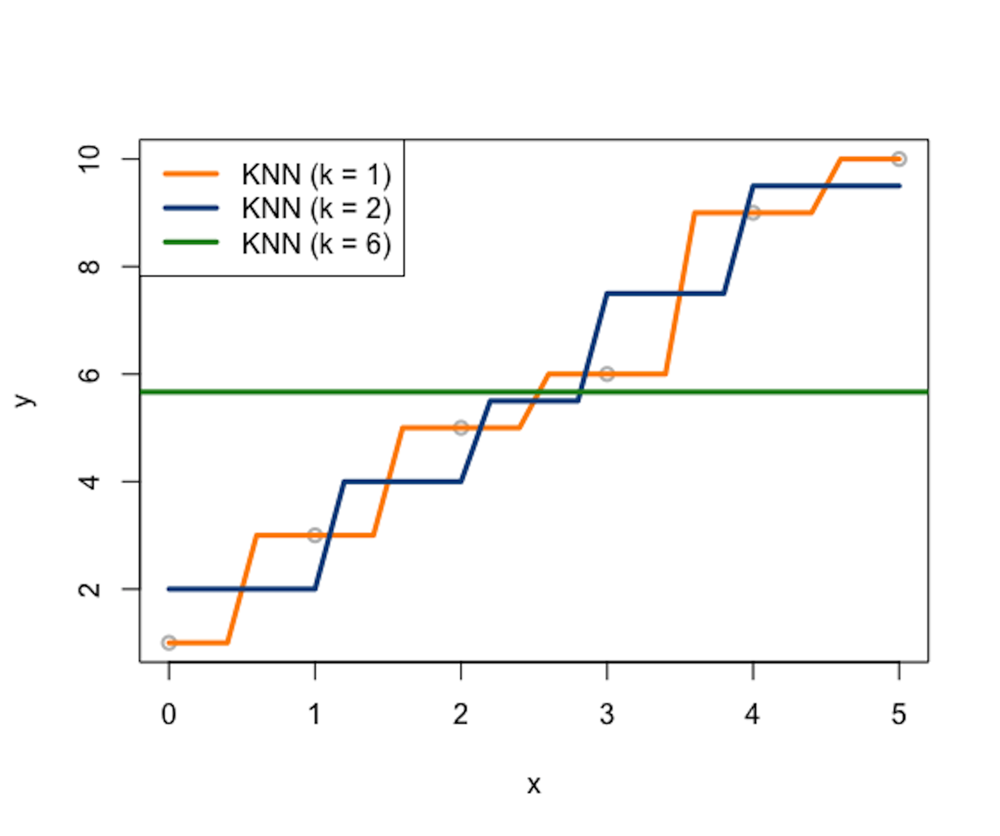Consider a data example as shown in Table 46. A visualization of the data points is shown in Figure 165, i.e., the gray data points.
Table 46: Example of a dataset with \(6\) data points
| ID | \(x\) | \(y\) |
|---|---|---|
| \(1\) | \(0\) | \(1\) |
| \(2\) | \(1\) | \(3\) |
| \(3\) | \(2\) | \(5\) |
| \(4\) | \(3\) | \(6\) |
| \(5\) | \(4\) | \(9\) |
| \(6\) | \(5\) | \(10\) |
Let’s build \(3\) KNN smoother models (e.g., \(k=1\), \(k=2\), and \(k=6\)) and use the Euclidean distance function to identify the nearest neighbors of a data point. Results are presented in Tables 47, 48, and 49, respectively. Note that, in this dataset, as there are in total \(6\) data points, the KNN model with \(k=6\) is the same as the trivial model that uses the average of \(y\) as predictions for all data points.
Table 47: Predictions by a KNN smoother model with \(k=1\) on some locations of \(x^*\)
| \(x^*\) | KNN | \(y^*\) |
|---|---|---|
| \(0.4\) | \(x_1\) | \(y_1\) |
| \(1.6\) | \(x_3\) | \(y_3\) |
| \(3.2\) | \(x_4\) | \(y_4\) |
| \(4.8\) | \(x_6\) | \(y_6\) |
Table 48: Predictions by a KNN smoother model with \(k=2\) on some locations of \(x^*\)
| \(x^*\) | KNN | \(y^*\) |
|---|---|---|
| \(0.4\) | \(x_1\), \(x_2\) | \((y_1 + y_2)/2\) |
| \(1.6\) | \(x_2\), \(x_3\) | \((y_2 + y_3)/2\) |
| \(3.2\) | \(x_4\), \(x_5\) | \((y_4 + y_5)/2\) |
| \(4.8\) | \(x_5\), \(x_6\) | \((y_5 + y_6)/2\) |
Table 49: Predictions by a KNN smoother model with \(k=6\) on some locations of \(x^*\)
| \(x^*\) | KNN | \(y^*\) |
|---|---|---|
| \(0.4\) | \(x_1\)-\(x_6\) | \(\sum_{n=1}^{6} y_n/6\) |
| \(1.6\) | \(x_1\)-\(x_6\) | \(\sum_{n=1}^{6} y_n/6\) |
| \(3.2\) | \(x_1\)-\(x_6\) | \(\sum_{n=1}^{6} y_n/6\) |
| \(4.8\) | \(x_1\)-\(x_6\) | \(\sum_{n=1}^{6} y_n/6\) |
The \(3\) KNN smoother models are also shown in Figure 165.
A distinct feature of the KNN smoother is the discrete manner to define the similarity between data points, which is, for any data point \(x^*\), the data point \(x_n\) is either a neighbor or not. The KNN smoother only uses the \(k\) nearest neighbors of \(x^*\) to predict \(y^*\). This discrete manner of the KNN smoother results in the serrated curves shown in Figure 165. This is obviously artificial, pointing out a systematic bias imposed by the KNN smoother model.
The kernel smoother. To remove this bias, the kernel smoother creates continuity in the similarity between data points. A kernel smoother defines \(w(x_n,x^* )\) in the following manner
\[\begin{equation*} \small w\left(x_{n}, x^{*}\right)=\frac{K\left(x_{n}, x^{*}\right)}{\sum_{n=1}^{N} K\left(x_{n}, x^{*}\right)}. \end{equation*}\]
Here, \(K\left(x_{n}, x^{*}\right)\) is a kernel function as we have discussed in Chapter 7. There have been many kernel functions developed, for example, as shown in Table 50.
Table 50: Some kernel functions used in machine learning
| Kernel Function | Mathematical Form | Parameters |
|---|---|---|
| Line | \(K(\boldsymbol{x}_i, \boldsymbol{x}_j) = \boldsymbol{x}_i^T\boldsymbol{x}_j\) | null |
| Polynomial | \(K(\boldsymbol{x}_i, \boldsymbol{x}_j)= \left(\boldsymbol{x}_i^T\boldsymbol{x}_j + 1\right)^q\) | \(q\) |
| Gaussian radial basis | \(K(\boldsymbol{x}_i, \boldsymbol{x}_j) = e^{-\gamma\Vert \boldsymbol{x}_i - \boldsymbol{x}_j\Vert^2}\) | \(\gamma \geq 0\) |
| Laplace radial basis | \(K(\boldsymbol{x}_i, \boldsymbol{x}_j) = e^{-\gamma\Vert \boldsymbol{x}_i - \boldsymbol{x}_j\Vert}\) | \(\gamma \geq 0\) |
| Hyperbolic tangent | \(K(\boldsymbol{x}_i, \boldsymbol{x}_j) = tanh(\boldsymbol{x}_i^T\boldsymbol{x}_j+b)\) | b |
| Sigmoid | \(K(\boldsymbol{x}_i, \boldsymbol{x}_j) = tanh(a\boldsymbol{x}_i^T\boldsymbol{x}_j+b)\) | a,b |
| Bessel function | \(K(\boldsymbol{x}_i, \boldsymbol{x}_j) = \frac{bessel_{v+1}^n(\sigma\Vert \boldsymbol{x}_i - \boldsymbol{x}_j \Vert)}{\left(\Vert \boldsymbol{x}_i -\boldsymbol{x}_j \Vert\right)^{-n(v+1)}}\) | \(\sigma, n,v\) |
| ANOVA radial basis | \(K(\boldsymbol{x}_i, \boldsymbol{x}_j) = \left( \sum_{k=1}^n e^{-\sigma\left(x_i^k - x_j^k\right)}\right)^d\) | \(\sigma, d\) |
Many kernel functions are smooth functions. To understand a kernel function, using R to draw it is a good approach. For example, the following R code draws a few instances of the Gaussian radial basis kernel function and shows them in Figure 166. The curve illustrates how the similarity smoothly decreases when the distance between the two data points increases. And the bandwidth parameter \(\gamma\) controls the rate of decrease, i.e., the smaller the \(\gamma\), the less sensitive the kernel function to the Euclidean distance of the data points (measured by \(\Vert \boldsymbol{x}_i - \boldsymbol{x}_j\Vert^2\)).
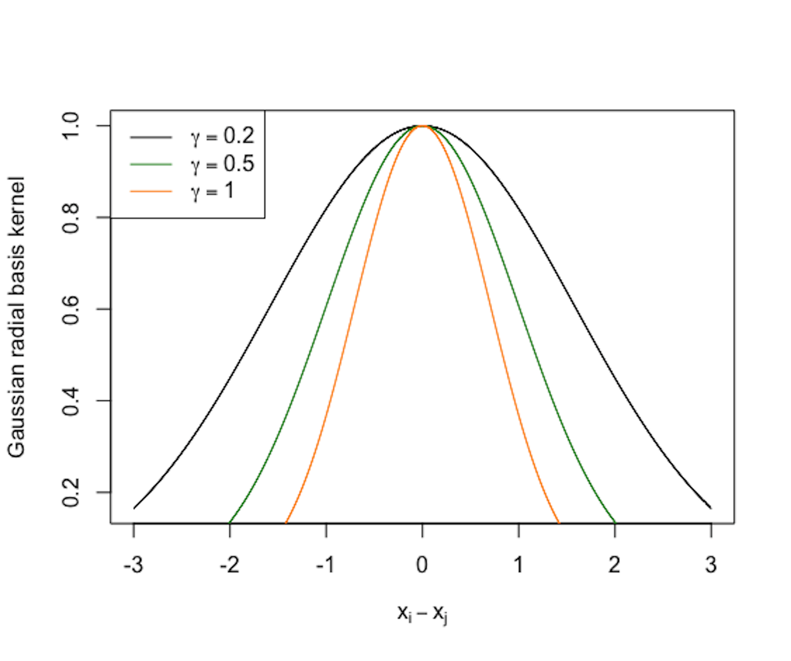 Figure 166: Three instances of the Gaussian radial basis kernel function (\(\gamma=0.2\), \(\gamma=0.5\), and \(\gamma=1\))
# Use R to visualize a kernel function
require(latex2exp) # enable the use of latex in R graphics
# write a function for the kernel function
gauss <- function(x,gamma) exp(- gamma * x^2)
x <- seq(from = -3, to = 3, by = 0.001)
plot(x, gauss(x,0.2), lwd = 1, xlab = TeX('$x_i - x_j$'),
ylab="Gaussian radial basis kernel", col = "black")
lines(x, gauss(x,0.5), lwd = 1, col = "forestgreen")
lines(x, gauss(x,1), lwd = 1, col = "darkorange")
legend(x = "topleft",
legend = c(TeX('$\\gamma = 0.2$'), TeX('$\\gamma = 0.5$'),
TeX('$\\gamma = 1$')),
lwd = rep(4, 4), col = c("black",
"darkorange","forestgreen"))R Lab
The 6-Step R Pipeline. Step 1 and Step 2 get the dataset into R and organize it in required format.
# Step 1 -> Read data into R workstation
library(RCurl)
url <- paste0("https://raw.githubusercontent.com",
"/analyticsbook/book/main/data/KR.csv")
data <- read.csv(text=getURL(url))
# str(data)
# Step 2 -> Data preprocessing
# Create X matrix (predictors) and Y vector (outcome variable)
X <- data$x
Y <- data$y
# Create a training data
train.ix <- sample(nrow(data),floor( nrow(data) * 4/5) )
data.train <- data[train.ix,]
# Create a testing data
data.test <- data[-train.ix,]Step 3 creates a list of models. For a kernel regression model, important decisions are made on the kernel function and its parameter(s). For example, here, we create two models with two kernel functions and their parameters:
# Step 3 -> gather a list of candidate models
# model1: ksmooth(x,y, kernel = "normal", bandwidth=10)
# model2: ksmooth(x,y, kernel = "box", bandwidth=5)
# model3: ...Step 4 uses cross-validation to evaluate the candidate models to identify the best model.
# Step 4 -> Use 5-fold cross-validation to evaluate the models
n_folds = 10 # number of fold
N <- dim(data.train)[1]
folds_i <- sample(rep(1:n_folds, length.out = N))
# evaluate model1
cv_mse <- NULL
for (k in 1:n_folds) {
test_i <- which(folds_i == k)
data.train.cv <- data.train[-test_i, ]
data.test.cv <- data.train[test_i, ]
require( 'kernlab' )
model1 <- ksmooth(data.train.cv$x, data.train.cv$y,
kernel = "normal", bandwidth = 10,
x.points=data.test.cv[,1])
# (1) Fit the kernel regression model with Gaussian kernel
# (argument: kernel = "normal") and bandwidth = 0.5; (2) There is
# no predict() for ksmooth. Use the argument
# "x.points=data.test.cv" instead.
y_hat <- model1$y
true_y <- data.test.cv$y
cv_mse[k] <- mean((true_y - y_hat)^2)
}
mean(cv_mse)
# evaluate model2 using the same script above
# ... The result is shown below
# [1] 0.2605955 # Model1
# [1] 0.2662046 # Model2Step 5 builds the final model.
# Step 5 -> After model selection, use ksmooth() function to
# build your final model
kr.final <- ksmooth(data.train$x, data.train$y, kernel = "normal",
bandwidth = 10, x.points=data.test[,1]) # Step 6 uses the final model for prediction.
# Step 6 -> Evaluate the prediction performance of your model
y_hat <- kr.final$y
true_y <- data.test$y
mse <- mean((true_y - y_hat)^2)
print(mse)This pipeline could be easily extended to KNN smoother model, i.e., using the knn.reg in the FNN package.
Simulation Experiment. We have created a R script in Chapter 5 to simulate data from nonlinear regression models. Here, we use the same R script as shown below.
# Simulate one batch of data
n_train <- 100
# coefficients of the true model
coef <- c(-0.68,0.82,-0.417,0.32,-0.68)
v_noise <- 0.2
n_df <- 20
df <- 1:n_df
tempData <- gen_data(n_train, coef, v_noise)The simulated data are shown in Figure 167 (i.e., the gray data points).
Figure 167: Kernel regression models with different choices on the bandwidth parameter (\(\gamma\)) of the Gaussian radial basis kernel function
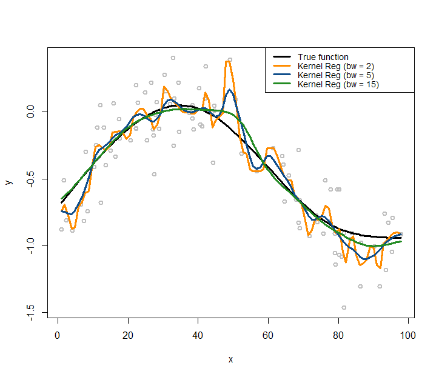The following R code overlays the true model, i.e., as the black curve, in Figure 167.
# Plot the true model
plot(y ~ x, col = "gray", lwd = 2)
lines(x, X %*% coef, lwd = 3, col = "black")Let’s use the kernel regression model to fit the data. We use the Gaussian radial basis kernel function, with three different choices of the bandwidth parameter (\(\gamma\)), i.e., (\(\gamma = 2\), \(\gamma = 5\), \(\gamma = 15\)). Then we overlay the three fitted kernel regression models in Figure 167 using the following R code.
lines(ksmooth(x,y, "normal", bandwidth=2),lwd = 3,
col = "darkorange")
lines(ksmooth(x,y, "normal", bandwidth=5),lwd = 3,
col = "dodgerblue4")
lines(ksmooth(x,y, "normal", bandwidth=15),lwd = 3,
col = "forestgreen")
legend(x = "topright",
legend = c("True function", "Kernel Reg (bw = 2)",
"Kernel Reg (bw = 5)", "Kernel Reg (bw = 15)"),
lwd = rep(3, 4),
col = c("black","darkorange","dodgerblue4","forestgreen"),
text.width = 32, cex = 0.85)As shown in Figure 167, the bandwidth parameter determines how smooth are the fitted curves: the larger the bandwidth, the smoother the regression curve236 Revisit Figure 166 and connect the observations made in both figures, i.e., which one in Figure 166 leads to the smoothest curve in Figure 167 and why?.
Similarly, we can use the same simulation experiment to study the KNN smoother model. We build three KNN smoother models with \(k=3\), \(k=10\), and \(k=50\), respectively.
# install.packages("FNN")
require(FNN)
## Loading required package: FNN
xy.knn3<- knn.reg(train = x, y = y, k=3)
xy.knn10<- knn.reg(train = x, y = y, k=10)
xy.knn50<- knn.reg(train = x, y = y, k=50)Similar to Figure 167, we use the following R code to draw Figure 168 that contains the true model, the sampled data points, and the three fitted models.
Figure 168: KNN regression models with different choices on the number of nearest neighbors
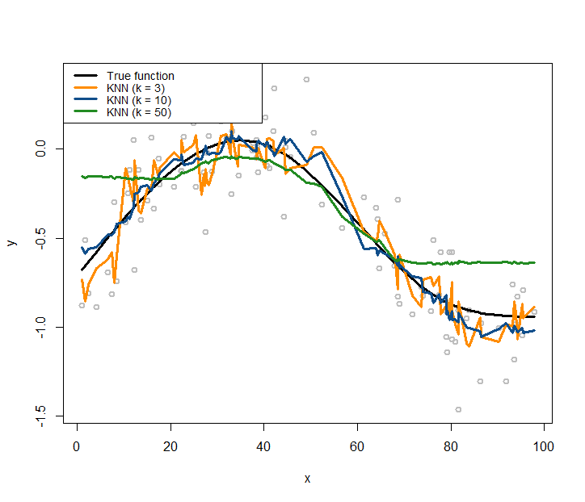# Plot the data
plot(y ~ x, col = "gray", lwd = 2)
lines(x, X %*% coef, lwd = 3, col = "black")
lines(x, xy.knn3$pred, lwd = 3, col = "darkorange")
lines(x, xy.knn10$pred, lwd = 3, col = "dodgerblue4")
lines(x, xy.knn50$pred, lwd = 3, col = "forestgreen")
legend(x = "topleft",
legend = c("True function", "KNN (k = 3)",
"KNN (k = 10)", "KNN (k = 50)"),
lwd = rep(3, 4),
col = c("black", "darkorange", "dodgerblue4",
"forestgreen"),
text.width = 32, cex = 0.85)Comparing Figures 167 and 168, it seems that the curve of the kernel regression model is generally smoother than the curve of a KNN model. This observation relates to the discrete manner the KNN model employs, while the kernel model uses smooth kernel functions that introduce smoothness and continuity into the definition of the neighbors of a data point (thus no hard thresholding is needed to classify whether or not a data point is a neighbor of another data point).
With a smaller \(k\), the fitted curve by the KNN smoother model is less smooth. This is because a KNN smoother model with a smaller \(k\) predicts on a data point by relying on fewer data points in the training dataset, ignoring information provided by the other data points that are considered far away237 What about a linear regression model? When it predicts on a given data point, does it use all the data points in the training data, or just a few local data points?.
In terms of model complexity, the smaller the parameter \(k\) in the KNN model, the larger the complexity of the model. Most beginners think of the opposite when they first encounter this question.
Conditional variance regression model
Rationale and formulation
Another common complication when applying linear regression model in real-world applications is that the variance of the response variable may also change. This phenomenon is called heteroscedasticity in regression analysis. This complication can be taken care of by a conditional variance regression model that allows the variance of the response variable to be a (usually implicit) function of the input variables. This leads to the following model
\[\begin{equation} \small y=\boldsymbol{\beta}^T\boldsymbol{x}+\epsilon_{\boldsymbol{x}}, \epsilon_{\boldsymbol{x}} \sim N(0, \sigma^2_{\boldsymbol{x}}), \tag{99} \end{equation}\]
with \(\epsilon_{\boldsymbol{x}}\) modeled as a normal distribution with varying variance as a function of \(\boldsymbol{x}\).
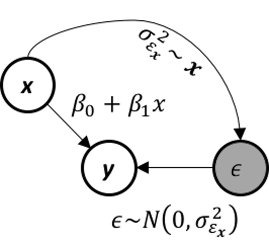 Figure 169: The data-generating mechanism of a conditional variance regression model
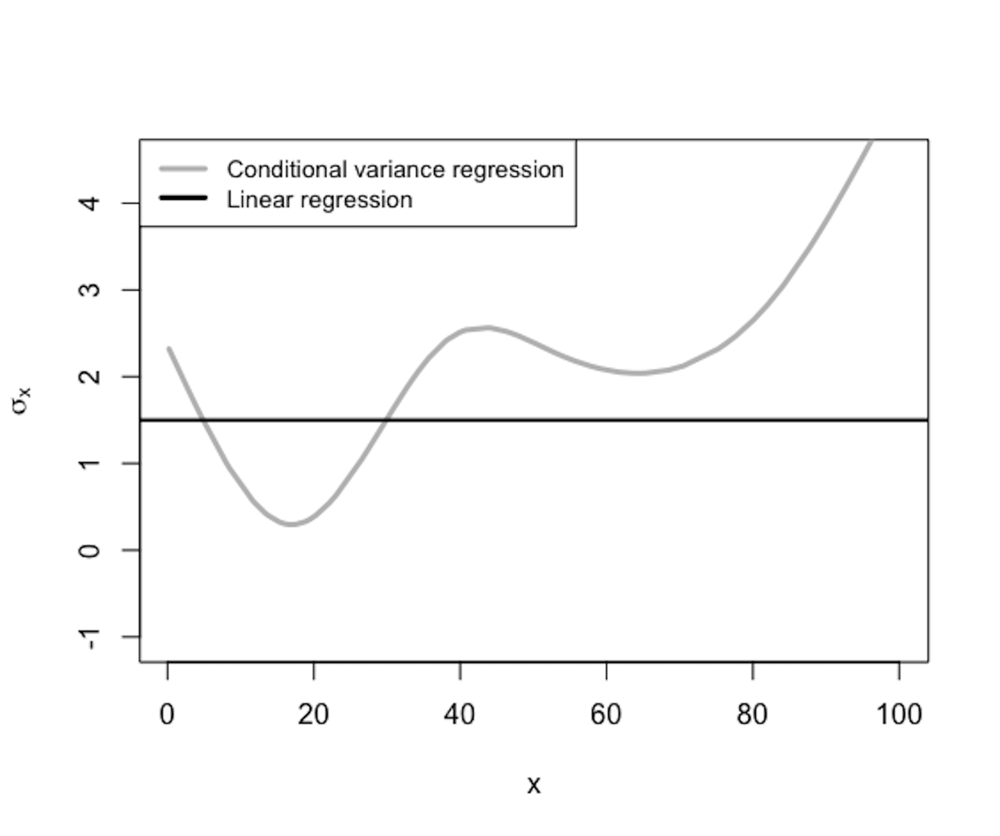 Figure 170: \(\sigma_{\boldsymbol{x}}\) is a function of \(\boldsymbol{x}\)
The conditional variance regression model differs from the regular linear regression model in terms of how it models \(\sigma_{\boldsymbol{x}}\), as illustrated in Figure 169. In other words, the linear regression model is a special type of the conditional variance regression model, with \(\sigma_{\boldsymbol{x}}\) being a fixed constant as the horizontal line shown in Figure 170. The conditional variance regression model is a stacked model with one regression model on \(y\) and another model on \(\sigma_{\boldsymbol{x}}\). The model stacking is a common strategy in statistics to handle multi-layered problems.
Theory and method
Given a dataset with \(N\) data points and \(p\) variables
\[\begin{equation*} \small \boldsymbol{y}=\left[ \begin{array}{c}{y_{1}} \\ {y_{2}} \\ {\vdots} \\ {y_{N}}\end{array}\right], \boldsymbol{X}=\left[ \begin{array}{ccccc}{1} & {x_{11}} & {x_{21}} & {\cdots} & {x_{p 1}} \\ {1} & {x_{12}} & {x_{22}} & {\cdots} & {x_{p 2}} \\ {\vdots} & {\vdots} & {\vdots} & {\vdots} & {\vdots} \\ {1} & {x_{1 N}} & {x_{2 N}} & {\cdots} & {x_{p N}}\end{array}\right]. \end{equation*}\]
where \(\boldsymbol y \in R^{N \times 1}\) denotes the \(N\) measurements of the outcome variable, and \(\boldsymbol{X} \in R^{N \times(p+1)}\) denotes the data matrix that includes the \(N\) measurements of the \(p\) input variables and one dummy variable that corresponds to the intercept term \(\beta_0\). The remaining issue is how to estimate the regression parameters \(\boldsymbol{\beta}\). There are two situations: \(\sigma_{\boldsymbol{x}}^2\) is known and \(\sigma_{\boldsymbol{x}}^2\) is unknown.
The likelihood function is238 Readers can use Eq. (99) to derive this likelihood function. \[\begin{equation*} \small -\frac{\pi}{2} \ln 2 \pi-\frac{1}{2} \sum_{n=1}^{N} \log \sigma_{\boldsymbol x_{n}}^{2}-\frac{1}{2} \sum_{n=1}^{N} \frac{\left(y_{n}-\boldsymbol{\beta}^{T} \boldsymbol{x}_{n}\right)^{2}}{\sigma_{\boldsymbol x_{n}}^{2}}. \end{equation*}\]
As we have known \(\sigma_{\boldsymbol x}^2\), the parameters to be estimated only involve the last part of the likelihood function. Thus, we estimate the parameters that minimize: \[\begin{equation*} \small \frac{1}{2} \sum_{n=1}^{N} \frac{\left(y_{n}-\boldsymbol{\beta}^{T} \boldsymbol{x}_{n}\right)^{2}}{\sigma_{\boldsymbol x_{n}}^{2}}. \end{equation*}\] This could be written in the matrix form as239 \(\boldsymbol W\) is a diagonal matrix with its diagonal elements as \(\boldsymbol W_{nn}=\frac{1}{\sigma_{\boldsymbol x_n}^2}\).
\[\begin{equation} \small \min_\beta (\boldsymbol{y}-\boldsymbol{X \beta})^T\boldsymbol{W}(\boldsymbol{y}-\boldsymbol{X\beta}). \tag{100} \end{equation}\]
This has the same structure as the generalized least squares (GLS) problem we have mentioned in Chapter 3. To solve this optimization problem, we take the gradient of the objective function in Eq. (100) and set it to be zero
\[\begin{equation*} \small \frac{\partial (\boldsymbol{y}-\boldsymbol{\mathrm{X} \beta})^T\boldsymbol{W}(\boldsymbol{y}-\boldsymbol{ X\beta})}{\partial \boldsymbol \beta}=0, \end{equation*}\]
which gives rise to the equation
\[\begin{equation*} \small \boldsymbol{X}^T \boldsymbol W (\boldsymbol y - \boldsymbol{X} \boldsymbol \beta) = 0. \end{equation*}\]
This leads to the GLS estimator of \(\boldsymbol \beta\)
\[\begin{equation} \small \hat{\boldsymbol{\beta}} = (\boldsymbol{X}^T\boldsymbol{WX} )^{-1}\boldsymbol{X}^T \boldsymbol{W} \boldsymbol y. \tag{101} \end{equation}\]
A more complicated situation, also a more realistic one, is that we don’t know \(\sigma_{\boldsymbol x}^2\). If we can estimate \(\sigma_{\boldsymbol x}^2\), we can reuse the procedure we have developed for the case when we have known \(\sigma_{\boldsymbol x}^2\).
As shown in Figure 170, \(\sigma_{\boldsymbol x}^2\) is a function of \(\boldsymbol x\). In other words, it uses the input variables \(\boldsymbol x\) to predict a new outcome variable, \(\sigma_{\boldsymbol x}^2\). Isn’t this a regression problem? The problem here is we don’t have the “measurements” of the outcome variable, i.e., the outcome variable \(\sigma_{\boldsymbol x}^2\) is not directly measurable240 Another example of a latent variable..
To overcome this problem, we estimate the measurements of the latent variable241 I.e., just like what we did in the EM algorithm to estimate \(z_{nm}\). See Chapter 6., denoted as \(\hat{\sigma}_{\boldsymbol{x}_n}^2\) for \(n=1, 2, \dots, N\). We propose the following steps:
1. Initialize \(\hat{\sigma}_{\boldsymbol{x}_n}^2\) for \(n=1, 2, \dots, N\) by any reasonable approach (i.e., a trivial but popular approach, randomization).
2. Estimate \(\hat{\boldsymbol{\beta}}\) using the GLS estimator shown in Eq. (101), and get \(\hat{y}_n=\hat{\boldsymbol \beta}^T \boldsymbol{x}_n\) for \(n=1, 2, \dots, N\).
3. Derive the residuals \(\hat{\epsilon}_n = y_n-\hat{y}_n\) for \(n=1, 2, \dots, N\).
4. Build a regression model, e.g., using the kernel regression model, to fit \(\hat \epsilon\) using \(\boldsymbol x\).242 I.e., the training dataset is \(\{\boldsymbol x_n, \hat{\epsilon}_n, n=1, 2, \dots, N\}\).
5. Predict \(\hat{\sigma}^2_{\boldsymbol x_n}\) for \(n=1,2,\dots,N\) using the fitted model in Step 4.
6. Repeat Steps 2 – 5 until convergence or satisfaction of a stopping criteria243 E.g., fix the number of iterations, or set a threshold for changes in the parameter estimation..
This approach of taking some variables as latent variables and further using statistical estimation/inference to fill in the unseen measurements has been useful in statistics and used in many models, such as the latent factor models, structural equation models, missing values imputation, EM algorithm, Gaussian mixture model, graphical models with latent variables, etc.
R Lab
Simulation Experiment. We simulate a dataset to see how well the proposed iterative procedure works for the parameter estimation when \(\sigma_{\boldsymbol x}^2\) is unknown. The simulated data has one predictor and one outcome variable. The true model is
\[\begin{equation*} \small y = 1 + 0.5 x + \epsilon_x, \quad \sigma^2_x = 0.5 + 0.8 x^2. \end{equation*}\]
We stimulate \(100\) data points from this model using the R script shown below.
# Conditional variance function
# Simulate a regression model with heterogeneous variance
gen_data <- function(n, coef) {
x <- rnorm(100,0,2)
eps <- rnorm(100,0,sapply(x,function(x){0.5+0.8*x^2}))
X <- cbind(1,x)
y <- as.numeric(X %*% coef + eps)
return(data.frame(x = x, y = y))
}
n_train <- 100
coef <- c(1,0.5)
tempData <- gen_data(n_train, coef)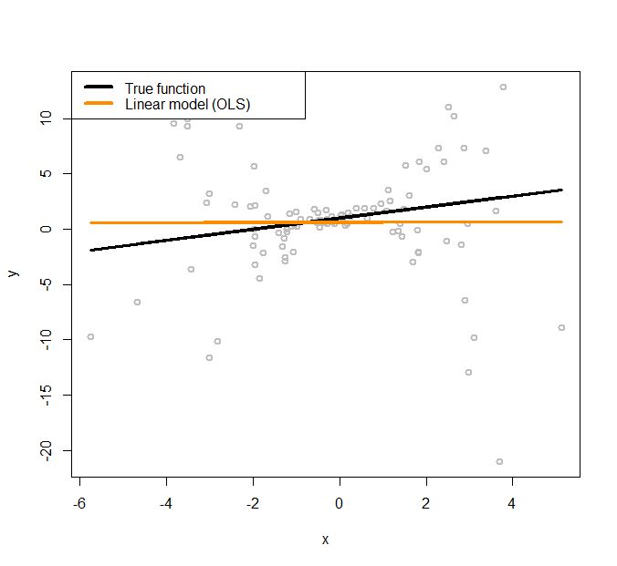 Figure 171: Linear regression model to fit a heteroscedastic dataset
The simulated data points are shown in Figure 171, together with the true model (the black line).
To initialize the iterative procedure of parameter estimation for the conditional variance regression model, we fit a regular linear regression model using the following R code.
# Fit the data using linear regression model (OLS)
x <- tempData[, "x"]
y <- tempData[, "y"]
fit.ols <- lm(y~x,data=tempData)
# Plot the data and the models
x <- tempData$x
X <- cbind(1, x)
y <- tempData$y
plot(y ~ x, col = "gray", lwd = 2)
# Plot the true model
lines(x, X %*% coef, lwd = 3, col = "black")
# Plot the linear regression model (OLS)
lines(x, fitted(fit.ols), lwd = 3, col = "darkorange")
legend(x = "topleft", legend = c("True function",
"Linear model (OLS)"),
lwd = rep(4, 4), col = c("black", "darkorange"),
text.width = 4, cex = 1)The fitted line is shown in Figure 171, which has a significant deviation from the true regression model. We use the fitted line as a starting point, i.e., so that we can estimate the residuals244 Residuals \(\hat{\epsilon}_n = y_n-\hat{y}_n\) for \(n=1, 2, \dots, N\). based on the fitted linear regression model. The estimated residuals are plotted in Figure 172 as grey dots. A nonlinear regression model, the kernel regression model implemented by npreg(), is fitted on these residuals and shown in Figure 172 as the orange curve. The true function of the variance, i.e., \(\sigma^2_x = 0.5 + 0.8 x^2\), is also shown in Figure 172 as the black curve.
It can be seen that the residuals provide a good starting point for us to approximate the underlying true variance function. To reproduce Figure 172, use the following R script.
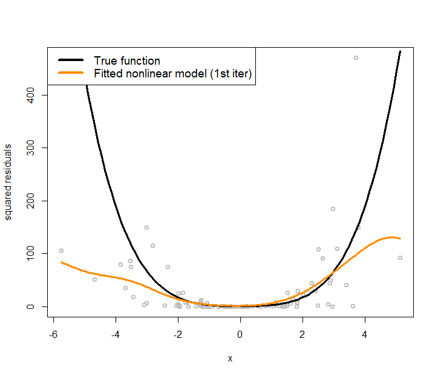 Figure 172: Nonlinear regression model to fit the residuals (i.e., the grey dots)
# Plot the residual estimated from the linear regression model (OLS)
plot(x,residuals(fit.ols)^2,ylab="squared residuals",
col = "gray", lwd = 2)
# Plot the true model underlying the variance of the
# error term
curve((1+0.8*x^2)^2,col = "black", lwd = 3, add=TRUE)
# Fit a nonlinear regression model for residuals
# install.packages("np")
require(np)
var1 <- npreg(residuals(fit.ols)^2 ~ x)
grid.x <- seq(from=min(x),to=max(x),length.out=300)
lines(grid.x,predict(var1,exdat=grid.x), lwd = 3,
col = "darkorange")
legend(x = "topleft",
legend = c("True function",
"Fitted nonlinear model (1st iter)"),
lwd = rep(4, 4), col = c("black", "darkorange"),
text.width = 5, cex = 1.2)The orange curve shown in Figure 172 provides an approach to initialize the iterative procedure of parameter estimation for the conditional variance regression model: to estimate the \(\hat{\sigma}_{\boldsymbol{x}_n}^2\) for \(n=1, 2, \dots, N\) in Step 1.245 In R, this is done by fitted(var1). Then, for Step 2, we fit a linear regression model according to Eq. (101). This is done by the following R code.
# Fit a linear regression model (WLS) with the weights specified
# by the fitted nonlinear model of the residuals
fit.wls <- lm(y~x,weights=1/fitted(var1))
plot(y ~ x, col = "gray", lwd = 2,ylim = c(-20,20))
# Plot the true model
lines(x, X %*% coef, lwd = 3, col = "black")
# Plot the linear regression model (OLS)
lines(x, fitted(fit.ols), lwd = 3, col = "darkorange")
# Plot the linear regression model (WLS) with estimated
# variance function
lines(x, fitted(fit.wls), lwd = 3, col = "forestgreen")
legend(x = "topleft",
legend = c("True function", "Linear (OLS)",
"Linear (WLS) + estimated variance"),
lwd = rep(4, 4),
col = c("black", "darkorange","forestgreen"),
text.width = 5, cex = 1)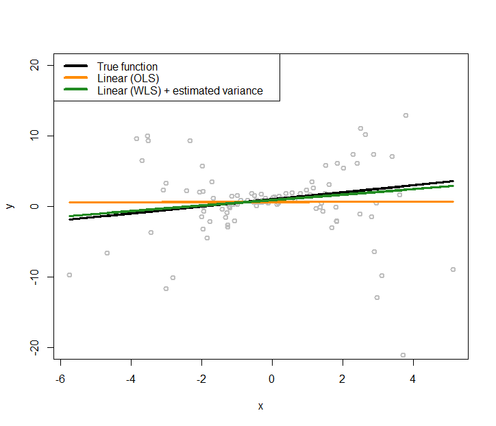 Figure 173: Fit the heteroscedastic dataset with two linear regression models using OLS and GLS (that accounts for the heteroscedastic effects with a nonlinear regression model to model the variance regression)
The new regression model is added to Figure 171 as the green line, which generates Figure 173. The new regression model is closer to the true model.
And we could continue this iterative procedure until a convergence criterion is met.
Real data. Now let’s apply the conditional variance regression model on the AD dataset. Like what we did in the simulation experiment, we first fit a regular linear regression model, then, use the kernel regression model to fit the residuals, then obtain the estimates of the variances, then estimate the regression parameters using Eq. (101). The R code is shown below. Results are shown in Figure 174.
library(RCurl)
url <- paste0("https://raw.githubusercontent.com",
"/analyticsbook/book/main/data/AD.csv")
AD <- read.csv(text=getURL(url))
str(AD)
# Fit the data using linear regression model (OLS)
x <- AD$HippoNV
y <- AD$MMSCORE
fit.ols <- lm(y~x,data=AD)
# Fit a linear regression model (WLS) with the weights specified
# by the fitted nonlinear model of the residuals
var1 <- npreg(residuals(fit.ols)^2 ~ HippoNV, data = AD)
fit.wls <- lm(y~x,weights=1/fitted(var1))
plot(y ~ x, col = "gray", lwd = 2)
# Plot the linear regression model (OLS)
lines(x, fitted(fit.ols), lwd = 3, col = "darkorange")
# Plot the linear regression model (WLS) with estimated variance
# function
lines(x, fitted(fit.wls), lwd = 3, col = "forestgreen")
legend(x = "topleft",
legend = c("Linear (OLS)",
"Linear (WLS) + estimated variance"),
lwd = rep(4, 4), col = c("darkorange","forestgreen"),
text.width = 0.2, cex = 1)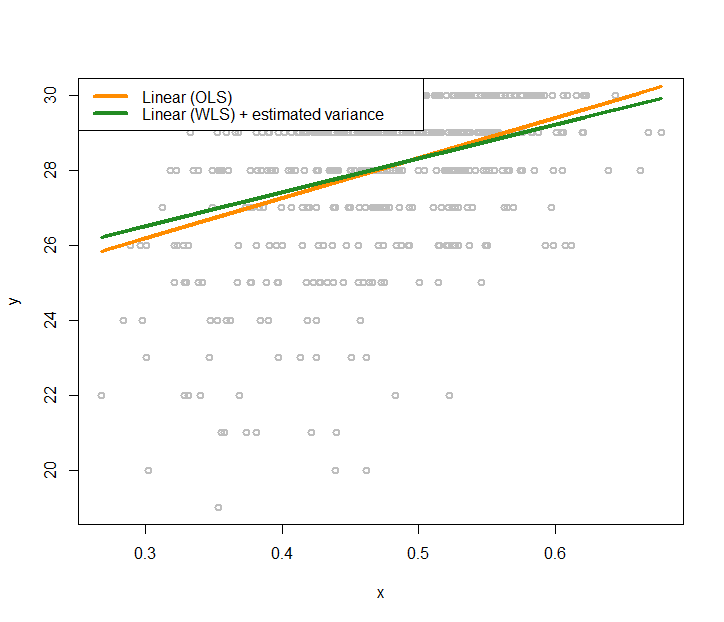 Figure 174: Fit the AD dataset with two linear regression models using OLS and GLS (that accounts for the heteroscedastic effects with a nonlinear regression model to model the variance regression)
We also visualize the fitted variance functions in Figure 175 via the following R code.
# Plot the residual estimated from the linear regression
# model (OLS)
plot(x,residuals(fit.ols)^2,ylab="squared residuals",
col = "gray", lwd = 2)
# Fit a nonlinear regression model for residuals
# install.packages("np")
require(np)
var2 <- npreg(residuals(fit.wls)^2 ~ x)
grid.x <- seq(from=min(x),to=max(x),length.out=300)
lines(grid.x,predict(var1,exdat=grid.x), lwd = 3,
col = "darkorange")
lines(grid.x,predict(var2,exdat=grid.x), lwd = 3,
col = "forestgreen")
legend(x = "topleft",
legend = c("Fitted nonlinear model (1st iter)",
"Fitted nonlinear model (2nd iter)"),
lwd = rep(4, 4),
col = c( "darkorange", "forestgreen"),
text.width = 0.25, cex = 1.2)Figure 175 shows that in the data the heteroscedasticity is significant. Learning the variance function is helpful in this context. First, in terms of the statistical aspect, it improves the fitting of the regression line. Second, knowing the variance function itself is important knowledge in healthcare, e.g., variance often implies unpredictability or low quality in healthcare operations, pointing out root causes of quality problems or areas of improvement.
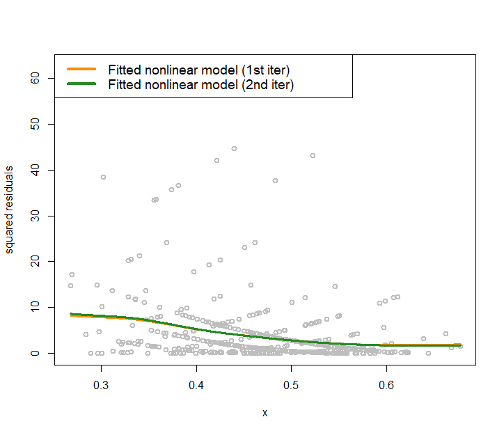 Figure 175: Nonlinear regression model to fit the residuals in the 2nd iteration for the AD data
Remarks
Experiment
The following R code conducts the experiment in Figure 164 (left).
# Write a nice simulator to generate dataset with one
# predictor and one outcome from a polynomial regression
# model
require(splines)
seed <- rnorm(1)
set.seed(seed)
gen_data <- function(n, coef, v_noise) {
eps <- rnorm(n, 0, v_noise)
x <- sort(runif(n, 0, 100))
X <- cbind(1,ns(x, df = (length(coef) - 1)))
y <- as.numeric(X %*% coef + eps)
return(data.frame(x = x, y = y))
}
n_train <- 30
coef <- c(1,0.5)
v_noise <- 3
tempData <- gen_data(n_train, coef, v_noise)
tempData[31,] = c(200,200)
# Fit the data using linear regression model
x <- tempData[, "x"]
y <- tempData[, "y"]
fit <- lm(y~x,data=tempData)
# Plot the data
x <- tempData$x
X <- cbind(1, x)
y <- tempData$y
plot(y ~ x, col = "gray", lwd = 2)
lines(x, X %*% coef, lwd = 3, col = "black")
lines(x, fitted(fit), lwd = 3, col = "darkorange")
legend(x = "topleft", legend = c("True function",
"Fitted linear model"), lwd = rep(4, 4),
col = c("black", "darkorange"),
text.width = 100, cex = 1.5)Linear regression as a kernel regression model
Let’s consider a simple linear regression problem that has one predictor, \(x\), and no intercept
\[\begin{equation*} \small y=\beta x + \epsilon. \end{equation*}\]
Given a dataset with \(N\) samples, i.e., \(\{x_n, y_n, n = 1, 2, \ldots, N. \}\), the least squares estimator of \(\beta\) is
\[\begin{equation*} \small \hat{\beta}=\frac{\left(\sum_{i=1}^{N} x_{n} y_{n}\right)}{\sum_{n=1}^{N} x_{n}^{2}}. \end{equation*}\]
Now comes a new data point, \(x^*\). To derive the prediction \(y^*\),
\[\begin{equation*} \small y^{*} = \hat{\beta}x^{*} =x^{*} \frac{\left(\sum_{n=1}^{N} x_{n} y_{n}\right)}{\sum_{n=1}^{N} x_{n}^{2}}. \end{equation*}\]
This could be further reformed as
\[\begin{equation*} \small y^{*}=\sum_{n=1}^{N} y_{n} \frac{x_{n}x^{*}}{\sum_{n=1}^{N} x_{n}^{2}}. \end{equation*}\]
This fits the form of the kernel regression as defined in Eq. (98).246 I.e., \(w(x_{n},x^{*}) = \sum_{n=1}^{N} \frac{x_{n}x^{*}}{\sum_{n=1}^{N} x_{n}^{2}}.\)
More about heteroscedasticity
For regression problems, the interest is usually in the modeling of the relationship between the mean247 See sidenote 11 and Figure 6. of the outcome variable with the input variables. Thus, when there is heteroscedasticity in the data, a nonparametric regression method is recommended to estimate the latent variance, more from a curve-fitting perspective which is to smooth and estimate, rather than a modeling perspective which is to study the relationship between the outcome variable with input variables. But, of course, we can still study how the input variables affect the variance of the response variable explicitly. Specifically, we can use a linear regression model to link the variance of \(y\) with the input variables. The iterative procedure developed for the case when \(\sigma_{\boldsymbol{x}}^2\) is unknown is still applicable here for parameter estimation.
Exercises
Table 51: Dataset for building a kernel regression model
| ID | \(x_1\) | \(y\) |
|---|---|---|
| \(1\) | \(-0.32\) | \(0.66\) |
| \(2\) | \(-0.1\) | \(0.82\) |
| \(3\) | \(0.74\) | \(-0.37\) |
| \(4\) | \(1.21\) | \(-0.8\) |
| \(5\) | \(0.44\) | \(0.52\) |
| \(6\) | \(-0.68\) | \(0.97\) |
1. Manually build a kernel regression model with Gaussian kernel with bandwidth parameter \(\gamma=1\) using the data shown in Table 51, and predict on the data points shown in Table 52.
Table 52: Testing dataset for the kernel regression model
| ID | \(x_1\) | \(y\) |
|---|---|---|
| \(1\) | \(-1\) | |
| \(2\) | \(0\) | |
| \(3\) | \(1\) |
2. Follow up on the dataset in Q1. Manually build a KNN regression model with \(K = 2\). Predict on the testing data in Table 52.
 Figure 176: The true model and its sampled data points
Figure 176: The true model and its sampled data points
3. Follow up on the dataset in Q1. Use the R pipeline for KNN regression on this data. Compare the result from R and the result by your manual calculation.
4. Follow up on the dataset in Q1. Use the gausskernel() function from the R package KRLS to calculate the similarity between the data points (including the \(6\) training data points and the \(3\) testing data points in Tables 51 and 52).
Figure 177: The true model and its sampled data points
5. Use the BostonHousing dataset from the R package mlbench, select the variable medv as the outcome, and use other numeric variables as the predictors. Run the R pipeline for KNN regression on it. Use cross-validation to select the best number of nearest neighbor, and summarize your findings.
6. Use the BostonHousing dataset from the R package mlbench and select the variable lstat as the predictor and medv as the outcome, and run the R pipeline for kernel regression on it. Try the Gaussian kernel function with its bandwidth parameter taking values as \(5, 10, 30, 100\).
7. Figure 176 shows a nonlinear model (i.e., the curve) and its sampled points. Suppose that the curve is unknown to us, and our task is to build a KNN regression model with \(K=2\) based on the samples. Draw the fitted curve of this KNN regression model.
8. Suppose that the underlying model is a linear model, as shown in Figure 177. To use KNN model to approximate the underlying model, we need samples. Suppose that we could afford sampling \(8\) data points. Which locations would you like to acquire samples in order to achieve best approximation of the underlying model using your later fitted KNN model?